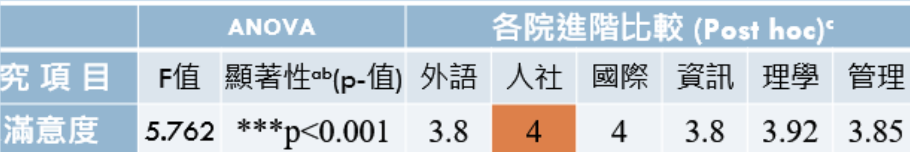

胡淑雯
資料科學暨大數據分析與應用學系
✩ 111學年度
李名鏞副教授的國科會計畫助理
✩ 111學年度Java書卷獎
✩ 2021年成功大學與虎尾科技大學
金象盃全國大數據實務能力競賽 優勝
✩ 大四網頁前端實習
公司：桃園 幔室布緹有限公司
- 這個顏色是含有連結的文字。
- 「自傳、專題、其他、活動」大項下都各5個副主題。
- 「副主題」「有➜的照片」跟「證照」區塊可以左右滑動。
- ᐁ有開合內容。
- 右下角有「置頂鍵」的輔助按鈕
- 看到有 ‹ › 都是有自動輪播效果,按下即可切換內容。
- ✩需要目錄請按我✩
專題/課堂：企業實習、專題、課堂表現、教學經歷(3)、網頁作品
其他相關：skill、成績單、證照(8)、about、獎助學金
活動幹部：競賽研習(3)、營隊志工(5)、幹部經歷、活動總召(3)
家庭背景
到不同地區生活
出生
高雄內門
高中
高雄楠梓
大學
台中沙鹿
實習
桃園楊梅
高雄人，家中成員四人，媽媽是新住民，姊姊今年大學畢業，爸爸跟姊姊身體不好，都領有身心障礙手冊，希望自己以後能為家裡出一份心力，減少家庭負擔。
在學期間參加過演說競賽，因此在面對他人自己能自然交流和展現自信，也喜歡嘗試各種事務活動，像是志工活動、舉辦活動、參加營隊、研習...等。
高中搬離開家讀書培養自主性。
未來規劃
-
短期-研究所入學前ᐁ全開1.強化資料庫基礎技能：ᐁ在下學期，加強資料庫基礎知識。計畫先復習學校所教的資料庫基礎，然後搭配網絡教學和電子書籍以擴展我的知識，以確保在研究所的學習和專業生涯中能夠更自信地應對。2. 演算法複習和優化：ᐁ重新整理大學演算法教材，精簡資料，以備將來使用，並探索特定演算法領域的深度知識。3. 拓寬科技視野：ᐁ積極閱讀新科技相關的專業期刊，以擴展自己的知識和視野。4. 實習深化：ᐁ在大四持續實習，專注於資料庫管理和搜尋引擎優化，為未來可能的分析工作做好準備。
-
中期-研究所階段ᐁ全開1. 培養閱讀期刊習慣：ᐁ
- 每週閱讀至少一篇關於科技的專業文章或期刊，並記錄重要觀點和關鍵資訊。
- 每月選擇一篇文章，進行深入分析和書寫，以提高寫作技巧。
2. 奠定良好基礎：ᐁ專注於發展數據分析和決策支援技能，參與相應的培訓和課程。同時，建立堅實的專案管理能力，並深入瞭解科技商業模式的理念。3. 研讀論文：ᐁ我將進行論文研讀，旨在提升我的基礎概念和論文寫作技巧。同時，我也將積極尋找一些能夠提升論文寫作能力的程式或技巧，以備不時之需。4. 參加競賽：ᐁ擴展我的視野並提高實踐能力，與他人切磋並不斷學習。 -
長期-未來展望1.依照專業從事相關行業2.國家考試
企業實習
----公司簡介----
【MSBT 幔室布緹】織品窗簾家飾公司,累積多年經營歐、亞之間紡織家飾成品貿易的經驗,熟知歐洲室內裝潢趨勢與流行脈動。於 2010 年 5 月成立「幔室布緹有限公司 Maison Boutique Co., Ltd.」,期望運用豐富多元的後台資源,引進各式變化的窗簾產品,由年輕的團隊主導經營,服務追求歐系時尚窗飾的消費大眾。
-----概述-----
- 實習來源:104自己投履歷
- 面試時間：112/05/26(五)
- 實習期間:112/06/19~112/12/31
- 上班時間:周一至周五 9:00~18:00
-----工作內容-----
照著新官網模版開發網頁
- 第一階段:HTML+CSS bootstrap 完成頁面。
- 第二階段:jQery Javascript 完成互動性 。
- 第三階段:只能用原生 js+html+css 完成頁面 +AJAX 資料撈取。
公司正在進行網頁改版工作，主要使用WordPress來進行設計。從Divi主題開始，後來轉用Porto主題，但由於缺乏相關經驗，我們需要從頭開始摸索。我們嘗試充分利用每個主題，以確保能夠使用所有可用的功能來完成所需的目標版面。
在測試功能的過程中，我們也考慮了外掛的效果。我個人在摸索的過程中，花了很多時間尋找合適的外掛並進行測試。如果某些外掛不符合的需求，甚至要親自編寫程式碼，以確保能夠達到所需的目標樣式。
在主要功能的摸索階段完成後，從原本的工程師對接轉向自己和設計師之間的合作。當設計師詢問想要的樣式時，我需要在原本的網頁架構基礎和設計要求中尋找平衡，同時，也必須評估目前的功能是否足以實現這些樣式設計的要求。
版型設計時，會先跟工程師進行討論，有關SEO的地方工程師也會說明。同時也須協助工程師測試外掛程序，並統整測試結果。
-----實習動機-----
當時面試時，面試官的話深深吸引了我:「 這間公司的網路跟前後端主要都是我負責的。」這讓我對這家公司充滿了期待。我知道在這樣一位能力精湛的工程師的帶領下，將有機會學到許多，不僅可以鞏固前端知識，還能拓寬後端技能。
- 數據分析需要後端技能，後端則需要前端基礎概念。
- 所找的數據分析工作大部分與網頁前端有關。
- 累積實務經驗。
- 渴望學習更多的職場溝通技巧和團隊協作技能。
- 想深入了解自己的能力並提高面對職場的責任心。
- 為以後升學或求職先做準備。
-----歷程-----
入職前我的網頁開發能力當時並不高(當時面試作品)，但該公司主要看重「 自主學習能力」我能進入公司的原因有兩點：
表示我樂意付出時間和精力去完成事務的人。
證明學習能力，和可以專注於實習。
-----實習動機-----
工程師預計三天完成網頁，我卻花了一周的時間，感到有些慚愧。這次經驗讓我更加努力地提升自己的專業能力。聽了主管跟公司同事的建議，開始改善做筆記的習慣跟寫紀錄的方式，第二次寫網頁模板果真有很大的進步。
自己去思考評估作法是否合適恰當，要有自己的想法，而不是一味照要求做。 初期基礎訓練大約三天至一周的時間學一種語法跟運用。目前已經有一套自己的問題解決方式並快速完成設計師的要求。
初期開會，看著前輩們報告工作內容，觀察他們的談吐及了解他們所說的內容。學習使用淺顯易懂的詞語表達，讓他人能清楚了解跟展示做法跟問題，提高自己的表達能力。
實習和上學有很大差異，時間觀念的改變，睡眠時間調整為每天六到八小時，保持良好的精神狀態，到目前上班四個月來幾乎沒有遲到。
-----心得-----
大四面臨眾多選擇，我選擇了一個台灣目前不太流行的選項，即學期實習。雖然對考研究所而言，留校專題是不錯的選擇，但在大三時，我已經成功獨立進行問卷分析主題，並得到教授的認可，然而我更想有實務經驗所以選擇了實習。
對我來說，最重要的是追求學習的深度和意義。我尚未踏入職場，對於寫程式、處理數據、資料庫管理等方面的知識只是基礎，我渴望見證這些技能如何真正應用於實際工作場景中，以理解它們的真正意義。
我可以花上一整天，甚至更多的時間，致力於實現一個目標，因為我真的很享受這個過程，而不僅僅是為了完成任務。儘管在摸索新之時可能會遇到困難，但只要找到目標，一切都會變得非常有價值。
-----Skills-----
- HTML
- CSS
- JavaScript
- ＲＷＤ
- jQuery
- AJAX
- WordPress
Google Analytics(分析)進階
專題
大三時，擔任李名鏞老師的科技部計畫助理，其中自己完成的分析報告為本校靜宜大學的「 校友對學校的滿意度調查」，運用了Duncan 事後比較法，跟一些問卷回答轉為數值分析的手法，在整理成PPT跟Word檔案。
由於靜宜資料科學系專題是四年級的課程，而自己規劃四年級到企業實習，但希望增加專題作品，因此向老師徵詢並取得同意以此分析報告。
- - 一、調查對象 - -
調查對象為各系110學年度應屆畢業校友，總計2638人，其中大學部畢業生有2,399人，碩士班畢業生有258人，博士班1人。 成功調查1912人，佔全體畢業生人數的99.3%，其中大學部1752人(99.3%)，碩士班/博士班159/1人(99.6%)。
- - 二、調查方法 - -
調查施測期間在111年01月-111年9，掃描QR code方式上網填寫問卷，以問卷調查法進行調查。本年度調查與畢業生離校手續結合，以填寫線上問卷方式進行調查，或發送問卷至個人電子信箱邀請至特定網址填寫。
- - 三、分析運用 - -
- ANOVA-顯著結果、平均值
- 由Duncan檢定-滿意度高低
- - 四、其他應用 - -
- excel-問卷問題轉為數值分析
- R-分析及資料輸出
- - 五、分析流程 - -
- Excel資料整理好後，經由Ｒ讀取，分析資料，並把分析結果製作成Word和PPT，也會另外貼在另一份程式結果在word上，方便重複找尋。
資料匯入及轉換
R程式分析數據
自製程式結果

製作PPT簡報
其他課堂表現
教學
博幼基金會 數學老師
學生:沙鹿附近弱勢國小生
新生啟航週自己就去參與基金會的面試，之後自己帶的班6位小朋友，為他們安排課程，考卷批閱及教學，因為自己是第一次帶班，有很多不足，自己也會多花個1~2小時來安排教材，希望自己能盡快上手。

JAVA TA助教
學生:資科系二年Ａ班
因為大二java成績優異，也因為郭珈妤老師的推薦，自己擔任了這個職位，也順便當一次複習，讓自己有習慣練習程式的機會，之後實習時，正因有持續練習程式語法，寫JavaScript沒什麼障礙。

數位學伴
學生:兩名國小生
自己國中時，每學期都會參與數位學伴課程，而現在大學了，也想像以前的大學伴一樣給偏鄉小孩知識與陪伴，也因此每週都有製作的ppt，練習製作簡報的機會。

網頁作品
推甄資料網站
- 實習單位為網頁前端實習生
- 證明程式撰寫能力，和基礎美編架構
- 希望藉由作品能與其他考生有所區別
- 希望藉教授能有更佳的閱讀體驗
- HTML
- CSS
- JavaScript
- -jquery
- -bootstrap
- AJAX
- RWD響應式。
- 下拉式開闔。
- 輪播效果。
- ID 錨點
- overflow處理
- AJAX後端讀取。
Skill
程式
網頁相關
其他
成績單


證照
about me
基本資料
生日：90.10.08
性別：Female
戶籍地：高雄市內門區內豐里110號
居住地：桃園市楊梅區青年路3巷1號
個人特質
學歷
大學：台中私立靜宜大學
科系：資料科學暨大數據分析與應用學系
狀況：四年級 在學中
高中：高雄市立中山高級中學
狀況：普通科 已畢業
獎助學金
- 粉色：獎學金
- 綠色：幹部獎金
- 黃色：學校工讀金
- 藍色：ＴＡ、科技部助理
- 白色：學校飛鷹生補助金
- 黑色：其他
110學年：23,270元
111學年：85,481元
112學年：49,273元
獎學金：
- 110-2邢祖援將軍紀念獎學金
- 學生獎助金-理院（書卷獎）
- 110學士班學業成積優良獎學金
(學年班排四) - 111學士班學業成積優良獎學金
(學年班排三)
競賽研習
2022 統計科學營
地點：中央研究院
佐證資料：研習證書

2021 金象盃全國大數據實務能力競賽
舉辦單位： 成功大學暨虎尾科大
成績：優勝

2022 南山領袖營
地點：台中
性質：營隊培訓
佐證資料：參訓證明
營隊志工
2022 科技品格夏令營
地點：中華經典研究會
職位：營隊隊輔
佐證資料：研習證書


中小服務
地點：台中 北勢國小
職位：社團志工
佐證資料：志工證明


蓋夏圖書館 導覽員
地點：靜宜 蓋夏圖書館
職位：導覽人員
佐證資料：服務證書


2022北部大學博覽會
地點：台大綜合體育館
職位：資科系志工
佐證資料：志工證明


111-1心靈成長營
地點：宜蘭聖母山莊
職位：營隊隊輔＋工作人員
佐證資料：證書
幹部經歷
109
副班代
110
學生議員
110
宿舍幹部
111-1
學社部長

學生會


活動總召
資科系抽直屬總召
第一次擔任總召，面對許多陌生的挑戰。幸好有同學的支持和陪伴，即使是線上辦理，我們做了大量的準備工作，希望能給大一們找到一個好直屬。

111-1社團博覽會總召
第一次辦理大型活動，有36個社團參與其中。這也是學生會的首次舉辦活動，我和新認識的同伴攜手合作，共同完成了這項挑戰。我們在過程中向老師學習經驗，期望能成功圓滿地舉辦這個活動。
靜宜66週年校慶園遊會總召
第66週年的校慶主題「新青春●主動出擊」名字是當時辦社博所想的，希望在新的環境，為追尋自己的目標而不懈努力。

大學社團
火舞魅力研究社


當初覺得火舞很帥，那看別人帥不如自己也變成那樣。我入社後，一學期內掌握了各種舞蹈道具的基礎技巧，大二時擔任社團美宣，參與了兩場表演和三場工作。對我來說，火舞社代表了我大學社團生活的重要一部分。
美工社


因為對手工藝有濃厚的興趣，我一直想參加相關的活動。現在我已經到了三年級，而實習計劃即將來臨。如果我不趕快參加手工藝活動，可能會成為我一生的遺憾。因此，我選擇參加了兩門我非常感興趣的課程，一門是製作袖珍屋，另一門是製作乾燥花相框。